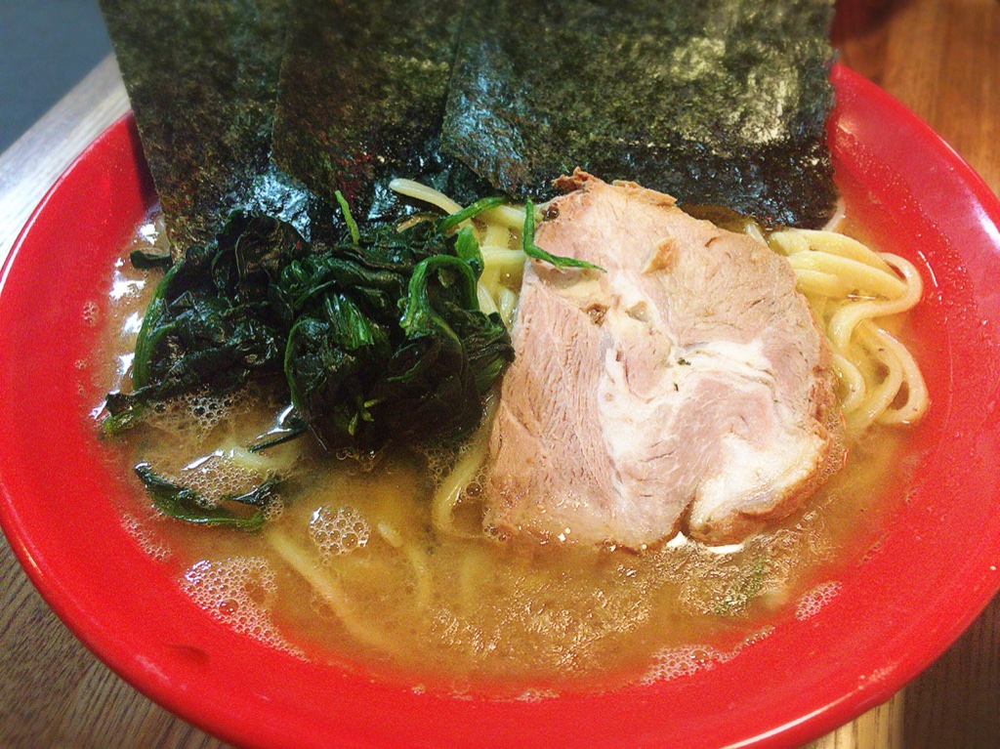

吉祥寺
| つけ麺 えん寺 吉祥寺総本店 | |
|---|---|
つけ麺 800yen濃厚ベジポタスープと、もちもち食感の麺が有名な、吉祥寺が誇る人気店。 |
|
| 洞くつ家 | |
|---|---|
ラーメン 並 650yen味がしっかりしているけど、重すぎず、バランスのとれた家系です。 |
|
| ホープ軒本舗 吉祥寺店 | |
|---|---|
中華そば 650yen東京の背脂豚骨ラーメンの元祖。 |
|
| 武蔵家 | |
|---|---|
|  | ラーメン 600yen吉祥寺の老舗。ラフで正統派な家系です。 |
| 吉祥寺 真風 | |
|---|---|
鯛塩らあめん 850yen真風と書いてMAJIと読みます。一番人気の鯛塩らあめんにはクリーミーな極上スープに魚介の旨味が詰まっています。 濃厚で且つ旨味重視なラーメンがお好きな方はお勧めです。 https://tabelog.com/tokyo/A1320/A132001/13024959/ |
|
| 野方ホープ 吉祥寺店 | |
|---|---|
のがほ 元 750yen「こってり、だけどあっさり」の変わらぬ一杯。とんこつの力強い旨味、鶏のまろやかさ、野菜の香りと滋味深さが、複雑で、優しい味わいを創り出しています。 ラーメンがおいしいだけではなく店内もとても居心地の良い空間です。 https://tabelog.com/tokyo/A1320/A132001/13094085/ |
|
| 一蘭 吉祥寺店 | |
|---|---|
ラーメン 790yen1960年創業の老舗とんこつラーメンチェーン店。一席ごとに仕切られてるので、女性お一人様でのご来店でも利用しやすいです。 唐辛子をベースに30種類の材料を調合した赤い秘伝のタレを溶かせば、味にさらなる深みを与えます。 https://tabelog.com/tokyo/A1320/A132001/13147972/ |
|